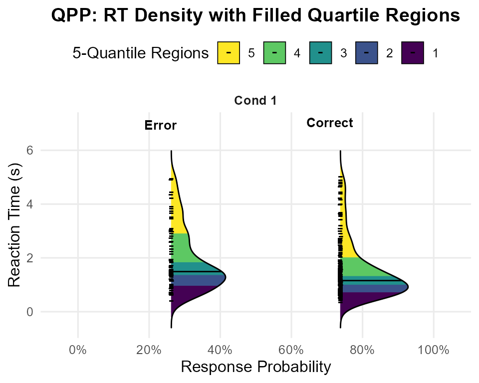
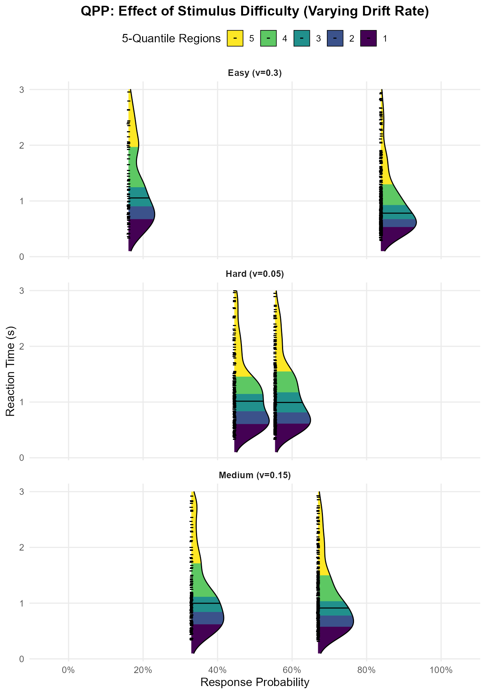

Understanding DDM Output with Quantile Probability Plots (QPPs)
Dogukan Nami Oztas
2025-05-20
Source:vignettes/06_quantile_probability_plots.Rmd
06_quantile_probability_plots.RmdIntroduction: Beyond Mean RT and Accuracy
When analyzing decision-making data or evaluating models like the Diffusion Decision Model (DDM), simply looking at mean Reaction Time (RT) and overall accuracy (Proportion Correct) can hide a wealth of information. The DDM, for instance, makes precise predictions about the entire shape of the RT distribution for both correct responses and errors.
Quantile Probability Plots (QPPs) – also known as “defective Cumulative Distribution Functions (CDFs)” or sometimes just “quantile functions” in this context – provide a powerful way to visualize these full RT distributions alongside choice probabilities. They allow us to see how different parts of the RT distribution (fast, medium, slow responses) change across different experimental conditions or model parameter settings.
This vignette will explain what QPPs are and demonstrate how to generate and interpret them using data simulated from our DDM functions. This type of plot is a standard tool in cognitive modeling, exemplified by figures like Figure 4 in “An Introduction to the Diffusion Model of Decision-Making” by Smith and Ratcliff.
What Information Does a QPP Convey?
A QPP simultaneously displays two key aspects of performance:
Choice Probability: The likelihood of making a particular response (e.g., correct vs. error, or choosing option A vs. option B). This is represented on the x-axis.
-
RT Distribution Shape: Instead of just the mean RT, QPPs show the density of the RT distribution for each response type. The density shows how likely different RTs are, with:
- Higher density = more common RTs
- Lower density = less common RTs
- The width of the distribution shows the variability in RTs
These RT densities are plotted on the y-axis as ridges, with: - Correct responses shown in blue - Error responses shown in red - Median RTs marked with points
Generating a Ridge QPP for a Single Condition
Let’s first simulate data for a single DDM condition and visualize its QPP using plot_qpp() to understand the basic output.
# Define parameters for a single condition
single_cond_params <- list(
mean_v = 0.2,
a = 0.7,
mean_z = 0.35, # Unbiased
s = 0.2,
mean_ter = 0.2,
sv = 0.3, # Some across-trial variability
sz = 0.1,
st0 = 0.05,
dt = 0.01
)
n_trials_single_qpp <- 300 # Number of trials
set.seed(701) # For reproducibility
data_single_condition_raw <- do.call(simulate_diffusion_experiment_variable,
c(list(n_trials = n_trials_single_qpp), single_cond_params))
# Clean the data by removing rows where rt or choice is NA (e.g., from timeouts)
data_single_condition <- data_single_condition_raw[
complete.cases(data_single_condition_raw$rt,
data_single_condition_raw$choice), ]
# Create a named list (even for one condition) for the plotting function
qpp_single_data_list <- list("Example Condition" = data_single_condition) # More descriptive name
# Diagnostic checks
cat("Number of trials simulated:", n_trials_single_qpp, "\n")## Number of trials simulated: 300## Number of valid trials after cleaning (no NA rt/choice): 286
if(nrow(data_single_condition) > 0) {
cat("Proportion of choice=1 (Correct, if upper boundary):",
round(mean(data_single_condition$choice == 1, na.rm=TRUE), 3), "\n")
cat("Proportion of choice=0 (Error, if lower boundary):",
round(mean(data_single_condition$choice == 0, na.rm=TRUE), 3), "\n")
cat("RT range for valid trials:", paste(round(range(data_single_condition$rt, na.rm=TRUE),3), collapse=" to "), "\n")
} else {
cat("No valid trials remain after cleaning.\n")
}## Proportion of choice=1 (Correct, if upper boundary): 0.738
## Proportion of choice=0 (Error, if lower boundary): 0.262
## RT range for valid trials: 0.352 to 5.03Now, let’s create a QPP for this single condition. We’ll use our
plot_qpp function to create a plot showing the density of
RTs for both correct and error responses:
single_qpp_plot <- plot_qpp(
data_list = qpp_single_data_list, # Use the list (even if it has only one item)
plot_title = "QPP: RT Density with Filled Quartile Regions",
num_quantiles_fill = 5, # For Quartiles (0-Q1, Q1-M, M-Q3, Q3-Max)
ridge_scale = 0.4,
alpha_quantile_fill = 0.7,
rt_lim = NULL, # Let the plot auto-determine RT limits for this example
show_median_line = TRUE,
median_line_color = "black",
vertical_label_offset = 2 # Tune this offset
)
print(single_qpp_plot)
Interpreting the Single-Condition Ridge QPP
The plot generated above displays the DDM’s predictions for our “Example Condition” in a rich format. Let’s break down how to read it:
Facet (“Cond 1” or “Example Condition”): Since we only provided one condition, there’s only one panel (facet) shown, labeled with the condition name. If we had multiple conditions in our data_list, each would appear in its own facet here.
Vertical Axis (“Reaction Time (s)”): This axis represents the reaction time, with faster responses at the bottom and slower responses at the top.
-
Horizontal Axis (“Response Probability”): This axis shows the probability of a particular response type (Error or Correct) occurring.
- The density ridges are positioned horizontally according to their overall probability. For example, if “Correct” responses occurred 80% of the time, the “Correct” ridge will be centered around the 80% mark on this axis. If “Error” responses occurred 20% of the time, the “Error” ridge will be centered around the 20% mark.
-
Density Ridges:
There are two density ridges shown, one for “Error” responses and one for “Correct” responses (as indicated by the text labels and typically differentiated by fill color if fill = response_type was used in an earlier version, or here, by the quantile fills).
-
The shape of each ridge represents the probability density of RTs for that response type.
Wider parts of the ridge indicate RTs that are more common or frequent.
Narrower parts of the ridge indicate RTs that are less common.
The overall spread of the ridge along the RT axis shows the variability in reaction times for that response type.
-
Filled Quantile Regions: Each ridge is internally colored into distinct bands. If num_quantiles_fill = 5 (as in your plot legend example), these bands represent quintiles of the RT distribution:
The bottom-most band (e.g., purple, labeled ‘1’) covers the fastest 20% of RTs for that response type.
The next band up (e.g., dark blue, labeled ‘2’) covers RTs from the 20th to the 40th percentile.
And so on, with the top-most band (e.g., yellow, labeled ‘5’) covering the slowest 20% of RTs (80th to 100th percentile).
The colors allow you to visually assess how much of the probability mass falls into different speed segments of the RT distribution.
Median Line: The black horizontal line drawn across each ridge (if show_median_line = TRUE) indicates the median RT (50th percentile) for that specific response type (Correct or Error).
What to Look For in This Single Condition Plot:
-
Choice Probability:
- Where are the “Correct” and “Error” ridges positioned horizontally? This directly shows you the P(Correct) and P(Error) for this set of DDM parameters. In your example image, P(Error) is around 25-30%, and P(Correct) is around 75-80%.
-
RT Distribution Shape for Corrects vs. Errors:
Are both distributions similarly shaped, or is one more skewed than the other?
Where are the medians? Are errors typically faster or slower than corrects for this condition?
How spread out are the RTs for corrects versus errors? (Look at the total vertical extent of each ridge).
-
Skewness (from Quantile Fills):
- For a right-skewed distribution (common in RT data), the upper quantile regions (e.g., the 80th-100th percentile band) will often appear visually “longer” or more stretched out along the RT axis than the lower quantile regions. This indicates a longer tail of slow responses. Your “Correct” responses in the example plot show this clear right skew. The “Error” responses also show some right skew.
This single plot already provides a much richer picture than just mean RT and accuracy. It tells us about the likelihood of each choice and the full distribution of times taken to make those choices.
Generating and Interpreting QPPs for Multiple Conditions
The real power of QPPs often comes when comparing multiple experimental conditions. Let’s simulate data for a few conditions where we vary the mean drift rate (mean_v), representing different levels of stimulus difficulty, similar to our earlier vignette examples. We’ll use the same plot_qpp function.
# Re-using qpp_base_params from the previous vignette (or define similar ones)
# Ensure it has sv, sz, st0 defined as our plot_qpp calls simulate_diffusion_experiment_variable
qpp_multi_cond_base_params <- list(
a = 0.6,
mean_z = 0.3, # Unbiased
s = 0.25, # Lower s for clearer v effect
mean_ter = 0.2,
sv = 0.25, # Moderate sv
sz = 0.1, # Moderate sz
st0 = 0.05, # Moderate st0
dt = 0.001
)
n_trials_qpp_multi <- 500 # Good number of trials per condition
# Condition 1: Low drift rate (hard task)
set.seed(801)
data_v_low_multi <- do.call(simulate_diffusion_experiment_variable,
c(list(n_trials = n_trials_qpp_multi, mean_v = 0.05), qpp_multi_cond_base_params))
# Condition 2: Medium drift rate
set.seed(802)
data_v_medium_multi <- do.call(simulate_diffusion_experiment_variable,
c(list(n_trials = n_trials_qpp_multi, mean_v = 0.15), qpp_multi_cond_base_params))
# Condition 3: High drift rate (easy task)
set.seed(803)
data_v_high_multi <- do.call(simulate_diffusion_experiment_variable,
c(list(n_trials = n_trials_qpp_multi, mean_v = 0.3), qpp_multi_cond_base_params))
# Create a named list for the plotting function
qpp_multi_data_list <- list(
"Hard (v=0.05)" = data_v_low_multi,
"Medium (v=0.15)" = data_v_medium_multi,
"Easy (v=0.3)" = data_v_high_multi
)Now, let’s plot these conditions together. Each condition will appear in its own facet.
# Note: Using condition_numbers = FALSE to use the descriptive names from the list
multi_condition_qpp_plot <- plot_qpp(
data_list = qpp_multi_data_list,
correct_choice_value = 1,
error_choice_value = 0,
plot_title = "QPP: Effect of Stimulus Difficulty (Varying Drift Rate)",
num_quantiles_fill = 5, # e.g., Quintiles
ridge_scale = 0.7, # Adjust for visual appearance with multiple facets
alpha_quantile_fill = 0.65,
rt_lim = c(0.1, 3.0), # Set a common RT limit for comparison, adjust as needed
show_median_line = TRUE,
median_line_color = "black",
condition_numbers = FALSE, # Use names from data_list
text_label_offset_factor = 0.05 # May need tuning with ridge_scale
)
print(multi_condition_qpp_plot)
Interpreting the Multi-Condition QPP
This plot now shows three panels (facets), one for each difficulty condition (“Hard”, “Medium”, “Easy”). Within each panel, we see the “Error” and “Correct” RT density ridges.
Key Observations When Comparing Conditions (Effect of increasing mean_v):
-
Shift in Choice Probabilities:
-
As you move from the “Hard (v=0.05)” facet to the “Easy (v=0.25)” facet:
The “Correct” ridge shifts further to the right along the “Response Probability” axis (P(Correct) increases towards 100%).
The “Error” ridge shifts further to the left (P(Error) decreases towards 0%).
This clearly visualizes that increasing stimulus difficulty (lower mean_v) leads to lower accuracy, and vice-versa.
-
-
Shift in RT Distributions:
For Correct Responses: As mean_v increases (task gets easier), the entire “Correct” density ridge (including its median and all its quantile regions) tends to shift downwards along the “Reaction Time” axis. This indicates that correct responses become faster across the board.
-
For Error Responses: The pattern for error RTs can be more complex and depends on other parameters (like sv).
If sv is substantial, errors in easy conditions (high mean_v) might be very fast (if z is biased or sz allows starting near the wrong boundary) or very slow (if v_trial happened to be very low or negative).
In general, with increasing mean_v, if errors still occur, they might also become faster, or their distribution might change shape. The QPP allows you to inspect this.
-
Changes in Distributional Shape/Skew:
Observe how the spread (distance between fastest and slowest quantile regions) and skewness of the “Correct” and “Error” ridges change across conditions.
For very easy conditions (high mean_v), RT distributions might become less variable and less skewed (more peaked at faster RTs).
For harder conditions (low mean_v), the noise s and variability sv have more opportunity to influence the process, potentially leading to more spread-out and skewed RT distributions for both correct and error responses.
Why QPPs with Facets are Powerful for Multiple Conditions:
Direct Comparison: You can easily compare the full pattern of choices and RT distributions across your experimental manipulations.
Detailed Insights: They reveal how different parts of the RT distribution (not just the mean) are affected by changes in parameters or experimental conditions. For example, a manipulation might affect slow responses more than fast responses, which a QPP would show.
Model Testing: When fitting models to data, researchers plot the QPP for their empirical data and overlay the QPP predicted by their best-fitting DDM parameters. A good match across all quantiles and choice probabilities indicates a good model fit.
Conclusion
Quantile Probability Plots, especially when visualized with density ridges and filled quantile regions, offer a rich and comprehensive way to understand the outputs of the Diffusion Decision Model. They allow for detailed inspection of choice probabilities and the full shape of RT distributions for both correct and error responses, and are particularly powerful for comparing behavior across different experimental conditions or model parameter settings. The plot_qpp() function in this project provides a flexible tool for generating these informative visualizations from your DDM simulations.